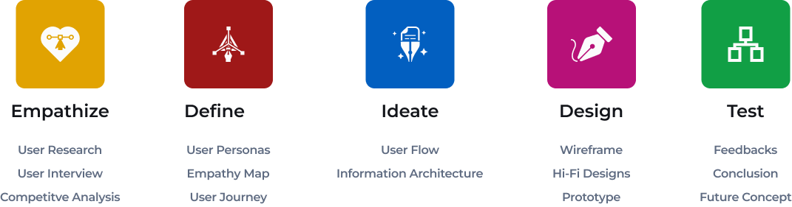
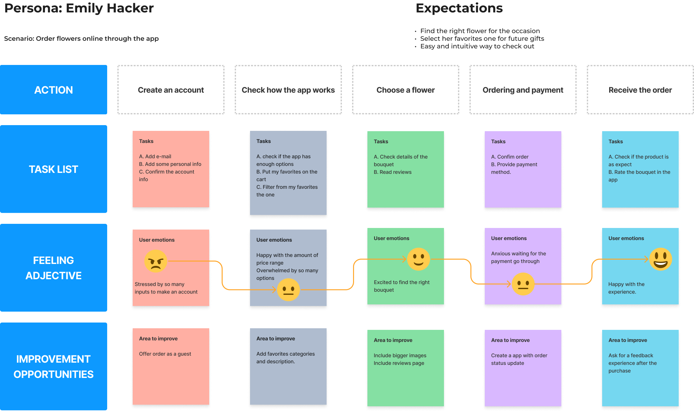
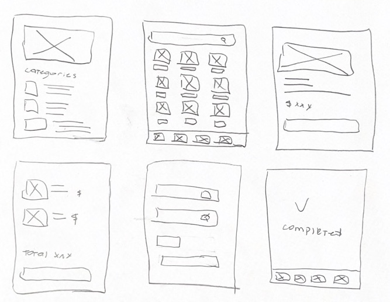
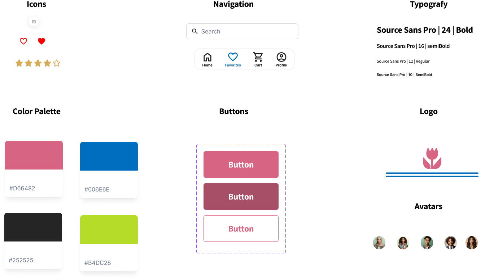

YEAR 2023
OVERVIEW
Farm Flower mobile app is an e-commerce designed for people interested in flowers as a gift or decoration. Farm Flower will help the user to find the most suitable flower and get them deliveried

Farm Flower mobile app is an e-commerce designed for people interested in flowers as a gift or decoration. Farm Flower will help the user to find the most suitable flower and get them deliveried
UX/UI Designer
User research, interviews, survey, competitive analysis, ideation, prototyping, testing, evaluation
Figma, Google jamboard, Usability Hub, Optimal Workshop
Many people want to buy quality flowers but don’t have much time to go to a flower shop. Also, some of them don’t know which flower is the best option for the occasion. Flower selection can be overwhelming and lead to poor choices that end up in a wasted budget.
Flower will let users search flowers by categories which will affect users who are not sure which flower to choose by letting the user make a faster decision and saving their time. I will measure effectiveness by having different flowers categories with real pictures Find high-quality flowers without getting overwhelmed. Design easy and intuitive app with a smooth and easy experience for the user.
In my design process I decide to use Design thinking , a user-centered approach to problem-solving that includes research, prototyping and testing to help to understand who is my user is, what their problems are, and what design should include. I consider their story, emotions and insights I have gathered about them.
To understand the needs and goals of my target users, I conduct user research using a combination of methods, including surveys, interviews, created close-up and big picture storyboards, emphaty maps, personas and user journey map.
I interviewed 5 individuals, age 18 - 55, who have a busy life schedule.
Based on research findings, I created a persona who represents the target user of the flower app and their needs and habits. This helped me to empathize with the end user on the remaining steps of the design process.
After gathering the findings from the research, I define the problem statement.
Emily Hacker is a full time student who needs to choose the right bouquet to send as a gift for the right occasion, because she has a busy schedule and no time to go to a flower store. What are the feautures necessary to help to make a decision
I created a user journey, to see how my user feel.
Creating the paper wireframe allowed me to synthesize initial information gathered from prospective users
After defining the main user flow, I attempted to create the first set of lo-fi wireframes to run some preliminary testing with the actual users. That allowed me to gather some initial feedback and save time later in the process before I started the high-fidelity prototype.
The version below includes

My goal was to keep the elements I was designing cohesive with the developed branding. I created a simple set of icons, buttons and a color palette using the colors of the logo. I wanted this website to represent......
